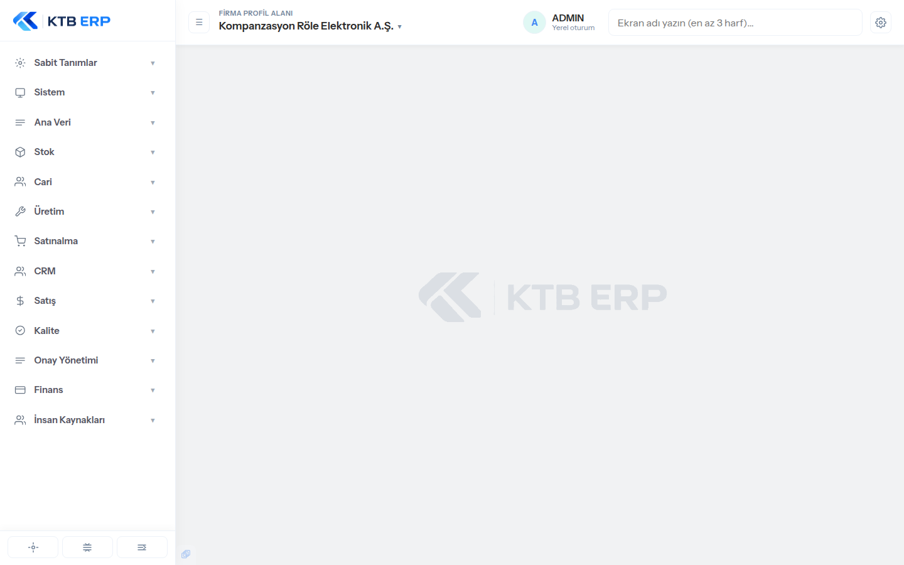
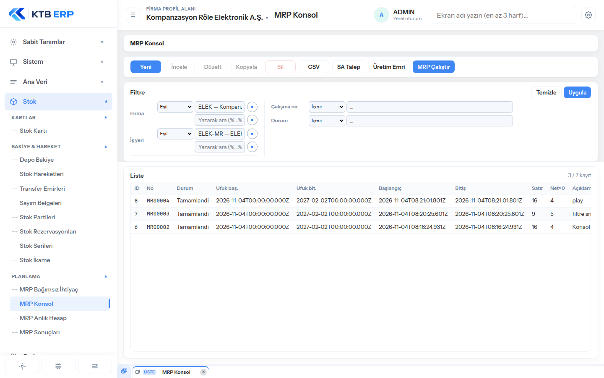
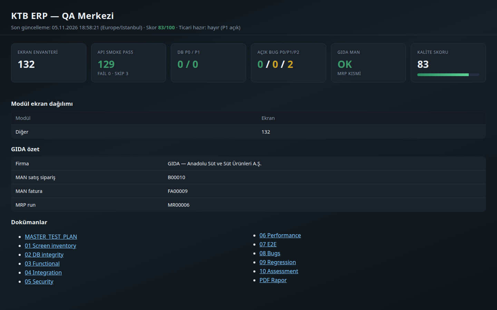
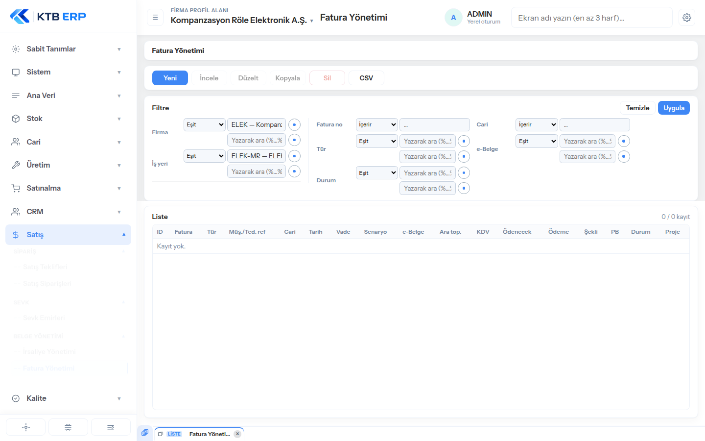
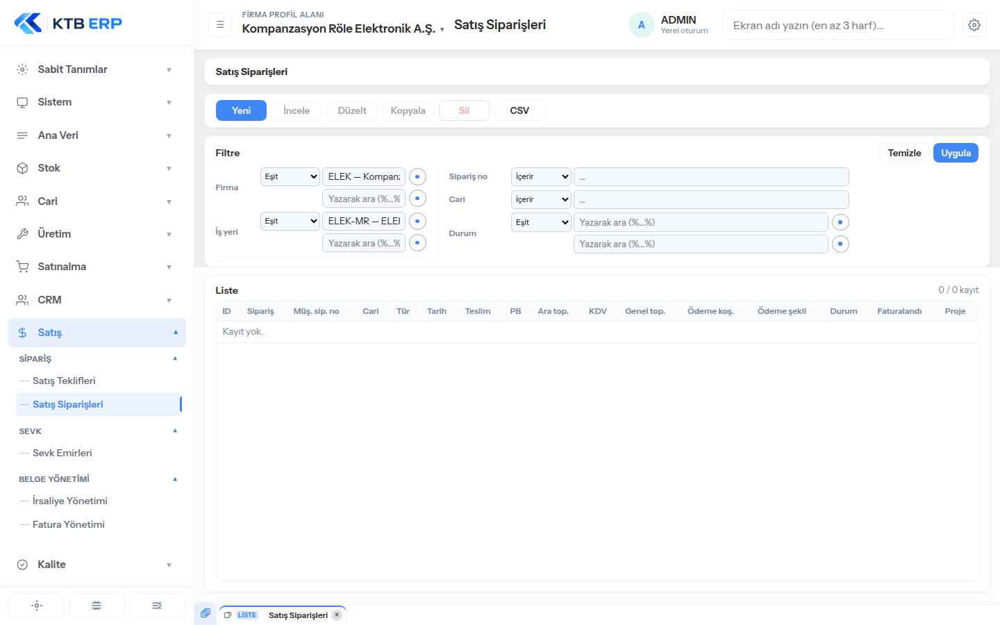
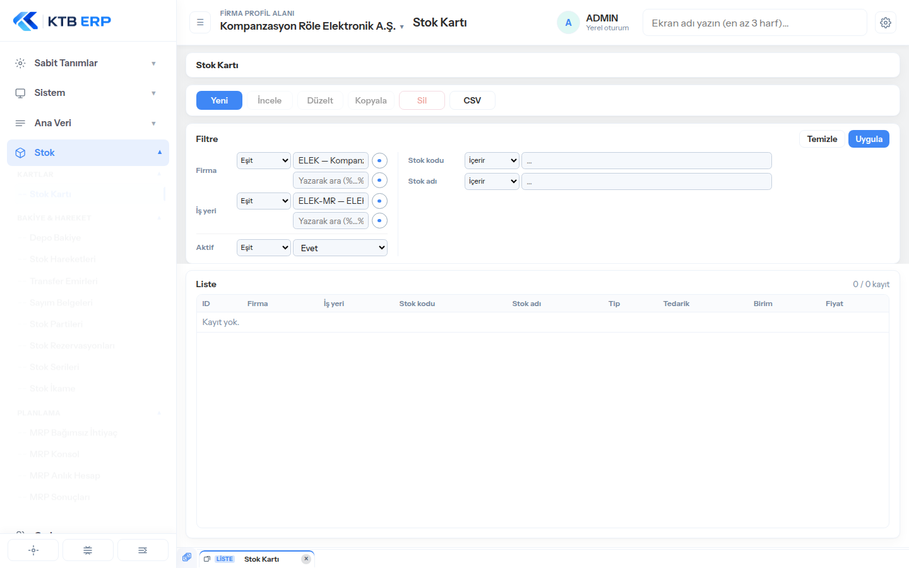
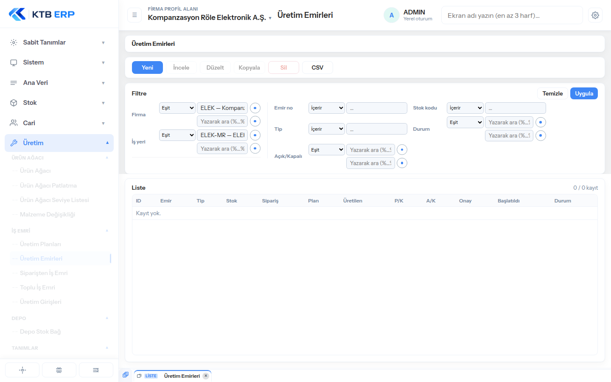

Proje: KTB ERP (erp-backend)
Tarih: 05.11.2026 18:58:30 (Europe/Istanbul)
Dal: cursor/erp-qa-merkezi-4f63
Skor: 74/100 — Ticari hazır: hayır (açık P1)
Başlangıç: 2026-11-05 (Europe/Istanbul)
Dal: `cursor/erp-qa-merkezi-4f63`
Amaç: Kalıcı QA merkezi + tam sistem denetimi (ekran · fonksiyon · veri · süreç)
| Ölçüm | Tanım | Bu tur |
|---|---|---|
| Ekran kapsamı | Menüdeki ekranların kaçı gerçekten test edildi | Hedef ≥ %90 GET smoke |
| Fonksiyon kapsamı | CRUD/approve/convert/filtre işlevleri | Kritik yollar + örnekleme |
| Kod kapsamı | Otomatik unit/API testleri | `npm test` + `scripts/qa/*` |
| İş süreci kapsamı | Uçtan uca şirket senaryosu adımları | GIDA süt döngüsü |
| # | Aşama | Durum | Çıktı |
|---|---|---|---|
| 0 | Keşif + plan | done | bu dosya |
| 1 | Ekran envanteri | done | `01-screen-inventory.md` (132 ekran) |
| 2 | DB bütünlük | done | `02-database-integrity-audit.md` |
| 3 | API smoke (tüm endpoint) | done | `03-functional-test-results.md` |
| 4 | Entegrasyon / güvenlik örnekleri | done | `04` / `05` |
| 5 | Performans örnek | done | `06` |
| 6 | GIDA E2E simülasyon | done | `07` + evidence |
| 7 | Bug tracker + düzeltmeler | done | `08` |
| 8 | Regresyon | done | `09` |
| 9 | Final puan + PDF | done | `10` + PDF + dashboard |
node scripts/qa/extract-screen-inventory.mjs
node scripts/qa/api-smoke.mjs
node scripts/qa/db-integrity-audit.mjs
node scripts/qa/e2e-gida-simulation.mjs
node scripts/qa/build-qa-dashboard.mjs
node scripts/qa/build-qa-pdf.mjs
npm test
Oluşturulma: 2026-11-05T11:15:12.399Z (Europe/Istanbul: 05.11.2026 14:15:12)
Toplam ekran: 132 · Modül: 13
> Test durumu başlangıçta `pending`. Otomatik smoke ve manuel E2E sonrası güncellenir.
| Modül | Ekran |
|---|---|
| Sabit Tanımlar (`fixed-tanimlar`) | 14 |
| Sistem (`sistem`) | 7 |
| Ana Veri (`ana-veri`) | 3 |
| Stok (`stok`) | 13 |
| Cari (`cari`) | 3 |
| Üretim (`uretim`) | 15 |
| Satınalma (`satinalma`) | 8 |
| CRM (`crm`) | 9 |
| Satış (`satis`) | 5 |
| Kalite (`kalite`) | 7 |
| Onay Yönetimi (`onay`) | 9 |
| Finans (`finans`) | 17 |
| İnsan Kaynakları (`insan-kaynaklari`) | 22 |
| TOPLAM | 132 |
| Bölüm | Ekran ID | Tech ID | Başlık | Endpoint | Flags | Alanlar (M/D/F/C) | Test |
|---|---|---|---|---|---|---|---|
| — | `numarator-tanimi` | SYS-NUM-SCR-001 | Numaratör Tanımı | `/kod-serileri` | CRUD | 3/4/3/6 | pending |
| — | `olcu-birimleri` | MDM-UOM-SCR-001 | Ölçü Birimleri | `/olcu-birimleri` | CRUD | 2/1/2/2 | pending |
| — | `kategori-tanimi` | MDM-CAT-SCR-001 | Kategori Tanımı | `/kategoriler` | CRUD | 3/2/3/4 | pending |
| — | `country-tanimi` | MDM-CTRY-SCR-001 | Ülke Tanımı | `/countries` | CRUD | 2/1/2/3 | pending |
| — | `para-birimi-tanimi` | MDM-CUR-SCR-001 | Para Birimi Tanımı | `/para-birimleri` | CRUD | 3/1/2/3 | pending |
| — | `sehir-tanimi` | MDM-CITY-SCR-001 | Şehir / İl Tanımı | `/cities` | CRUD, DETAIL:districts | 4/3/3/4 | pending |
| — | `odeme-kosulu-tanimi` | MDM-PAYT-SCR-001 | Ödeme Koşulu | `/odeme-kosullari` | CRUD | 3/2/2/4 | pending |
| — | `teslimat-kosulu-tanimi` | MDM-DLVT-SCR-001 | Teslimat Koşulu | `/teslimat-kosullari` | CRUD | 2/2/2/3 | pending |
| — | `dil-tanimi` | MDM-LANG-SCR-001 | Dil Tanımı | `/languages` | CRUD | 2/1/2/3 | pending |
| — | `banka-tanimi` | MDM-BANK-SCR-001 | Banka Tanımı | `/banks` | CRUD | 4/1/2/5 | pending |
| — | `doviz-exchange_rate-tanimi` | FIN-FX-SCR-001 | Döviz Kurları | `/doviz-kurlari` | CRUD, TCMB | 5/3/3/6 | pending |
| — | `hareket-kodlari` | INV-MVTC-SCR-001 | Hareket Kodları | `/hareket-kodlari` | CRUD | 4/9/5/8 | pending |
| — | `belge-tipleri` | MDM-DOCTYPE-SCR-001 | Belge Tipleri | `/belge-tipleri` | CRUD | 5/0/2/5 | pending |
| — | `vergi-kodlari` | MDM-TAX-SCR-001 | Vergi Kodları | `/finans-vergi-kodlari` | CRUD, TABS:1, DETAIL:oranlar | 7/0/3/6 | pending |
| Bölüm | Ekran ID | Tech ID | Başlık | Endpoint | Flags | Alanlar (M/D/F/C) | Test |
|---|---|---|---|---|---|---|---|
| Kullanıcılar | `kullanicilar` | SYS-USR-SCR-001 | Kullanıcılar | `/kullanicilar` | CRUD, YETKI_PANEL | 7/4/4/7 | pending |
| Kullanıcılar | `kullanici-gruplari` | SYS-GRP-SCR-001 | Kullanıcı Grupları | `/kullanici-gruplari` | CRUD | 2/7/2/5 | pending |
| Tanımlar | `sistem-parametreleri` | SYS-PRM-SCR-001 | Sistem Parametreleri | `/sistem-parametreleri` | CRUD | 3/3/2/4 | pending |
| Gözlem | `audit-log` | SYS-AUD-SCR-001 | Audit Log | `/audit-log` | RO | 0/0/4/6 | pending |
| Gözlem | `tablo-bilgileri` | SYS-META-SCR-001 | Tablo Bilgileri | `/meta/ekranlar` | RO, META | 0/0/0/3 | pending |
| Gözlem | `sql-sorgu` | SYS-SQL-SCR-001 | SQL Sorgu | `/sql-console` | SQL | 0/0/0/0 | pending |
| İletişim | `eposta-gonderimleri` | SYS-MAIL-SCR-001 | E-posta Gönderimleri | `/eposta-gonderimleri` | RO | 0/0/3/8 | pending |
| Bölüm | Ekran ID | Tech ID | Başlık | Endpoint | Flags | Alanlar (M/D/F/C) | Test |
|---|---|---|---|---|---|---|---|
| Organizasyon | `companies` | MDM-CO-SCR-001 | Firmalar | `/companies` | CRUD | 2/0/2/2 | pending |
| Organizasyon | `is-yerleri` | MDM-PLANT-SCR-001 | İş Yerleri | `/is-yerleri` | CRUD | 3/1/3/4 | pending |
| Organizasyon | `warehouses` | MDM-WH-SCR-001 | Depolar | `/warehouses` | CRUD | 3/4/4/5 | pending |
| Bölüm | Ekran ID | Tech ID | Başlık | Endpoint | Flags | Alanlar (M/D/F/C) | Test |
|---|---|---|---|---|---|---|---|
| Kartlar | `stok-karti` | INV-ITM-SCR-001 | Stok Kartı | `/items` | CRUD, TABS:9 | 5/0/4/8 | pending |
| Bakiye & Hareket | `depo-bakiye` | INV-BAL-SCR-001 | Depo Bakiye | `/stok-bakiyeleri` | RO | 0/0/3/13 | pending |
| Bakiye & Hareket | `stok-hareketleri` | INV-MVT-SCR-001 | Stok Hareketleri | `/stok-hareketleri` | CRUD, DETAIL:satirlar | 6/11/4/14 | pending |
| Bakiye & Hareket | `transfer-emirleri` | WMS-XFER-SCR-001 | Transfer Emirleri | `/transfer-emirleri` | CRUD, APPROVE, DETAIL:satirlar | 6/5/2/5 | pending |
| Bakiye & Hareket | `sayim-belgeleri` | WMS-CNT-SCR-001 | Sayım Belgeleri | `/sayim-belgeleri` | CRUD, APPROVE, DETAIL:satirlar | 5/5/2/4 | pending |
| Bakiye & Hareket | `stok-partileri` | INV-LOT-SCR-001 | Stok Partileri | `/stok-partileri` | CRUD | 4/2/2/5 | pending |
| Planlama | `mrp-bagimsiz-ihtiyac` | MFG-IR-SCR-001 | MRP Bağımsız İhtiyaç | `/mrp/bagimsiz-ihtiyaclar` | CRUD | 7/3/3/7 | pending |
| Planlama | `mrp-calisma` | MFG-MRP-SCR-001 | MRP Konsol | `/mrp/calismalar` | CRUD, MRP_KONSOL, MRP_RUN, MRP_TALEP, MRP_UE, TABS:3 | 5/0/2/9 | pending |
| Planlama | `mrp-hesap` | MFG-MRP-SCR-002 | MRP Anlık Hesap | `/mrp` | RO, MRP_RUN, MRP_TALEP, MRP_UE | 0/0/2/12 | pending |
| Planlama | `mrp-sonuclar` | MFG-MRP-RES-001 | MRP Sonuçları | `/mrp/calismalar` | RO, MRP_TALEP, MRP_UE, MRP_SONUC | 0/0/2/10 | pending |
| Bakiye & Hareket | `stok-rezervasyonlari` | INV-RSV-SCR-001 | Stok Rezervasyonları | `/stok-rezervasyonlari` | CRUD, APPROVE, DETAIL:satirlar | 3/8/5/9 | pending |
| Bakiye & Hareket | `stok-serileri` | INV-SER-SCR-001 | Stok Serileri | `/stok-serileri` | CRUD | 4/0/3/6 | pending |
| Bakiye & Hareket | `stok-ikame` | INV-SUB-SCR-001 | Stok İkame | `/stok-ikame` | CRUD | 4/0/2/5 | pending |
| Bölüm | Ekran ID | Tech ID | Başlık | Endpoint | Flags | Alanlar (M/D/F/C) | Test |
|---|---|---|---|---|---|---|---|
| Kartlar | `cari-kartlari` | MDM-BP-SCR-001 | Cari Kartları | `/partners` | CRUD, TABS:8, DETAIL:partner_details | 6/4/4/6 | pending |
| Finans | `cari-ekstre` | FIN-BPST-SCR-001 | Cari Ekstre | `/cari-hareketleri` | RO | 0/0/3/6 | pending |
| Finans | `tahsilat-odemeler` | FIN-APAR-SCR-001 | Tahsilat / Ödeme | `/tahsilat-odemeler` | CRUD | 9/0/3/14 | pending |
| Bölüm | Ekran ID | Tech ID | Başlık | Endpoint | Flags | Alanlar (M/D/F/C) | Test |
|---|---|---|---|---|---|---|---|
| Ürün Ağacı | `urun-agaci` | MFG-BOM-SCR-001 | Ürün Ağacı | `/urun-agaclari` | CRUD, TABS:2 | 35/0/11/15 | pending |
| Ürün Ağacı | `bom-patlatma` | MFG-BOM-SCR-002 | Ürün Ağacı Patlatma | `/bom/patlatma` | RO | 0/0/5/13 | pending |
| Ürün Ağacı | `bom-level-listesi` | MFG-BOM-SCR-003 | Ürün Ağacı Seviye Listesi | `/bom/level-listesi` | RO | 0/0/3/6 | pending |
| Ürün Ağacı | `bom-malzeme-degisikligi` | MFG-BOM-SCR-004 | Malzeme Değişikliği | `/bom/malzeme-degisikligi` | CRUD | 4/0/2/5 | pending |
| Tanımlar | `sinif-tanimi` | MFG-CLS-SCR-001 | Sınıf Tanımı | `/stok-siniflari` | CRUD | 3/2/2/4 | pending |
| Tanımlar | `is-merkezleri` | MFG-WC-SCR-001 | İş Merkezleri | `/is-merkezleri` | CRUD | 3/0/3/3 | pending |
| Tanımlar | `is-istasyonlari` | MFG-WS-SCR-001 | İş İstasyonları | `/is-istasyonlari` | CRUD | 4/0/3/5 | pending |
| Tanımlar | `routings` | MFG-ROUT-SCR-001 | Rotalar | `/routings` | CRUD, TABS:1 | 22/0/6/10 | pending |
| Tanımlar | `uretim-emri-tipleri` | MFG-WOT-SCR-001 | Üretim Emri Tipleri | `/uretim-emri-tipleri` | CRUD | 3/2/3/4 | pending |
| İş Emri | `uretim-planlari` | MFG-PLN-SCR-001 | Üretim Planları | `/uretim-planlari` | CRUD, CONVERT | 12/0/3/8 | pending |
| İş Emri | `uretim-emirleri` | MFG-WO-SCR-001 | Üretim Emirleri | `/uretim-emirleri` | CRUD, APPROVE, TABS:3, DETAIL:operasyonlar | 28/9/5/11 | pending |
| İş Emri | `siparis-is-emri` | MFG-WO-SCR-002 | Siparişten İş Emri | `/uretim-emirleri/siparis-adaylari` | CRUD | 11/0/3/8 | pending |
| İş Emri | `toplu-is-emri` | MFG-WO-SCR-003 | Toplu İş Emri | `/uretim-emirleri/siparis-adaylari` | CRUD, DETAIL:kalemler | 5/5/2/5 | pending |
| Depo | `stok-depo` | INV-WHL-SCR-001 | Depo Stok Bağ | `/stok-depo` | CRUD | 3/3/3/6 | pending |
| İş Emri | `uretim-girisleri` | MFG-RCPT-SCR-001 | Üretim Girişleri | `/uretim-girisleri` | CRUD | 2/0/3/5 | pending |
| Bölüm | Ekran ID | Tech ID | Başlık | Endpoint | Flags | Alanlar (M/D/F/C) | Test |
|---|---|---|---|---|---|---|---|
| — | `satin-alma-teklif-istekleri` | PUR-RFQ-SCR-001 | Satınalma Teklif İstekleri | `/satin-alma-teklif-istekleri` | CRUD, HIDDEN, DEPRECATED, DETAIL:satirlar | 4/3/2/3 | pending |
| Teklif | `satin-alma-teklifleri` | PUR-QUO-SCR-001 | Satınalma Teklifleri | `/satin-alma-teklifleri` | CRUD, APPROVE, CONVERT, DETAIL:satirlar | 17/17/3/7 | pending |
| Teklif | `satin-alma-anlasmalari` | PUR-AGR-SCR-001 | Satınalma Anlaşmaları | `/satin-alma-anlasmalari` | CRUD, DETAIL:satirlar | 10/6/3/3 | pending |
| Sipariş | `satin-alma-talepleri` | PUR-REQ-SCR-001 | Satınalma Talepleri | `/satin-alma-talepleri` | CRUD, APPROVE, DETAIL:satirlar | 15/20/2/3 | pending |
| Sipariş | `satin-alma-siparisleri` | PUR-ORD-SCR-001 | Satınalma Siparişleri | `/satin-alma-siparisleri` | CRUD, DETAIL:satirlar | 23/30/3/12 | pending |
| Mal Kabul | `mal-kabuller` | PUR-GR-SCR-001 | Mal Kabuller | `/mal-kabuller` | CRUD, CONVERT, DETAIL:satirlar | 13/12/3/8 | pending |
| Mal Kabul | `tedarikci-irsaliyeleri` | PUR-DLV-SCR-001 | Tedarikçi İrsaliyeleri | `/tedarikci-irsaliyeleri` | CRUD, DETAIL:satirlar | 6/6/3/5 | pending |
| Mal Kabul | `giris-kontrolleri` | QLT-INC-SCR-001 | Giriş Kontrolleri | `/giris-kontrolleri` | APPROVE, DETAIL:satirlar | 8/8/3/7 | pending |
| Bölüm | Ekran ID | Tech ID | Başlık | Endpoint | Flags | Alanlar (M/D/F/C) | Test |
|---|---|---|---|---|---|---|---|
| Tanımlar | `crm-firsat-asamalari` | CRM-STG-SCR-001 | Fırsat Aşamaları | `/crm-firsat-asamalari` | CRUD | 3/3/2/6 | pending |
| Tanımlar | `crm-faaliyet-tipleri` | CRM-ACTT-SCR-001 | Faaliyet Tipleri | `/crm-faaliyet-tipleri` | CRUD | 2/1/2/3 | pending |
| Pipeline | `crm-adaylar` | CRM-LEAD-SCR-001 | Müşteri Adayları | `/crm-adaylar` | CRUD, CONVERT | 17/0/3/7 | pending |
| Pipeline | `crm-kontaklar` | CRM-CNT-SCR-001 | Kontaklar | `/crm-kontaklar` | CRUD | 12/0/4/8 | pending |
| Pipeline | `crm-firsatlar` | CRM-OPP-SCR-001 | Fırsatlar | `/crm-firsatlar` | CRUD, APPROVE, CONVERT, DETAIL:satirlar | 16/4/4/8 | pending |
| Faaliyet | `crm-faaliyet-planlari` | CRM-APLN-SCR-001 | Faaliyet Planları | `/crm-faaliyet-planlari` | CRUD, CONVERT | 13/0/3/8 | pending |
| Faaliyet | `crm-faaliyetler` | CRM-ACT-SCR-001 | Faaliyetler | `/crm-faaliyetler` | CRUD | 14/0/3/8 | pending |
| Faaliyet | `crm-gorevler` | CRM-TASK-SCR-001 | Görevler | `/crm-gorevler` | CRUD, APPROVE | 10/0/3/7 | pending |
| Faaliyet | `crm-ajanda` | CRM-CAL-SCR-001 | Ajanda | `/crm-ajanda` | CRUD | 7/0/2/6 | pending |
| Bölüm | Ekran ID | Tech ID | Başlık | Endpoint | Flags | Alanlar (M/D/F/C) | Test |
|---|---|---|---|---|---|---|---|
| Sipariş | `satis-teklifleri` | SAL-QUO-SCR-001 | Satış Teklifleri | `/satis-teklifleri` | CRUD, CONVERT, DETAIL:satirlar | 26/18/3/13 | pending |
| Sipariş | `satis-siparisleri` | SAL-ORD-SCR-001 | Satış Siparişleri | `/sales_orders` | CRUD, APPROVE, CONVERT, TABS:2, DETAIL:kalemler | 15/25/3/15 | pending |
| Sevk | `sevk-emirleri` | SAL-SHP-SCR-001 | Sevk Emirleri | `/sevk-emirleri` | CRUD, CONVERT, DETAIL:satirlar | 28/9/3/10 | pending |
| Belge Yönetimi | `irsaliye-yonetimi` | SAL-DLV-SCR-001 | İrsaliye Yönetimi | `/delivery_notes` | CRUD, APPROVE, CONVERT, TABS:4, DETAIL:satirlar | 39/36/4/11 | pending |
| Belge Yönetimi | `fatura-yonetimi` | SAL-INV-SCR-001 | Fatura Yönetimi | `/invoices` | CRUD, APPROVE, CONVERT, TABS:3, DETAIL:kalemler | 44/34/5/16 | pending |
| Bölüm | Ekran ID | Tech ID | Başlık | Endpoint | Flags | Alanlar (M/D/F/C) | Test |
|---|---|---|---|---|---|---|---|
| Emirler | `kk-emirleri-gkk` | QLT-IQC-SCR-001 | Giriş Kalite Emirleri | `/kk-emirleri?direction=GKK` | APPROVE | 7/0/3/9 | pending |
| Emirler | `kk-emirleri-ckk` | QLT-OQC-SCR-001 | Çıkış Kalite Emirleri | `/kk-emirleri?direction=CKK` | APPROVE | 7/0/3/9 | pending |
| Emirler | `kk-uygunsuzluklar` | QLT-NCR-SCR-001 | KK Uygunsuzluklar | `/kk-uygunsuzluklar` | CRUD | 6/0/3/7 | pending |
| Emirler | `kk-capa` | QLT-CAPA-SCR-001 | CAPA | `/kk-capa` | CRUD | 6/0/3/5 | pending |
| Tanımlar | `kk-kontrol-planlari` | QLT-PLAN-SCR-001 | KK Kontrol Planları | `/kk-kontrol-planlari` | CRUD, DETAIL:kriterler | 3/7/3/4 | pending |
| Tanımlar | `kk-stok-planlari` | QLT-ITMP-SCR-001 | KK Stok Plan Bağları | `/kk-stok-planlari` | CRUD | 3/1/2/5 | pending |
| Tanımlar | `kk-ret-nedenleri` | QLT-REJ-SCR-001 | KK Ret Nedenleri | `/kk-ret-nedenleri` | CRUD | 2/1/2/3 | pending |
| Bölüm | Ekran ID | Tech ID | Başlık | Endpoint | Flags | Alanlar (M/D/F/C) | Test |
|---|---|---|---|---|---|---|---|
| Sabit Tanımlar | `onay-modul-kullanimlari` | SYS-APR-SCR-USG | Onay Modül Kullanımları | `/onay-module-kullanimlari` | CRUD | 11/0/0/8 | pending |
| Onay | `onaylarim` | SYS-APR-SCR-001 | Onaylarım | `/onay-kayitlari?benim=true` | APPROVE, DETAIL:adimlar | 11/6/3/8 | pending |
| Onay | `onay-izleme` | SYS-APR-SCR-002 | Onay İzleme | `/onay-kayitlari` | RO, DETAIL:adimlar | 11/7/5/10 | pending |
| Onay | `onay-yetki-devri` | SYS-APR-SCR-003 | Onay Yetki Devri | `/onay-yetki-devirleri` | CRUD | 6/2/3/7 | pending |
| Sabit Tanımlar | `onay-role-tanim` | SYS-APR-SCR-004 | Onay Rolü | `/onay-rolleri` | CRUD | 4/3/3/6 | pending |
| Sabit Tanımlar | `onay-kural-tanim` | SYS-APR-SCR-005 | Onay Kuralı | `/onay-kurallari` | CRUD, DETAIL:hareketler | 15/1/3/9 | pending |
| Sabit Tanımlar | `onay-rota-tanim` | SYS-APR-SCR-006 | Onay Rotası | `/onay-rotalari` | CRUD, DETAIL:adimlar | 14/10/3/7 | pending |
| Sabit Tanımlar | `onay-message-template` | SYS-APR-SCR-007 | Onay Mesaj Şablonu | `/onay-message-sablonlari` | CRUD | 4/2/2/4 | pending |
| Sabit Tanımlar | `onay-status-tanim` | SYS-APR-SCR-008 | Onay Durum Tanımı | `/onay-durumlari` | CRUD | 3/3/2/6 | pending |
| Bölüm | Ekran ID | Tech ID | Başlık | Endpoint | Flags | Alanlar (M/D/F/C) | Test |
|---|---|---|---|---|---|---|---|
| Tanımlar | `hesap-plani` | FIN-COA-SCR-001 | Hesap Planı | `/muhasebe-hesaplari` | CRUD | 7/6/4/7 | pending |
| Belgeler | `muhasebe-belgeleri` | FIN-JE-SCR-001 | Muhasebe Belgeleri | `/muhasebe-belgeleri` | CRUD, APPROVE, CONVERT, DETAIL:kalemler | 11/6/4/8 | pending |
| Tanımlar | `muhasebe-donemleri` | FIN-PER-SCR-001 | Muhasebe Dönemleri | `/muhasebe-donemleri` | APPROVE, CONVERT | 5/0/2/6 | pending |
| Tanımlar | `finans-vergi-kodlari` | FIN-TAX-SCR-001 | Vergi Kodları | `/finans-vergi-kodlari` | CRUD, TABS:1, DETAIL:oranlar | 7/0/2/8 | pending |
| Tanımlar | `finans-ulke-paketleri` | FIN-CPK-SCR-001 | Finans Ülke Paketleri | `/finans-country/paketler` | CRUD | 8/0/0/7 | pending |
| Tanımlar | `mali-yillar` | FIN-FY-SCR-001 | Mali Yıllar | `/muhasebe-donemleri/mali-yillar` | CRUD | 4/0/0/4 | pending |
| Banka / Kasa | `finans-banka-hesaplari` | FIN-BNK-SCR-001 | Banka Hesapları | `/finans-nakit/banka-hesaplari` | CRUD | 7/0/2/6 | pending |
| Banka / Kasa | `finans-kasa-hesaplari` | FIN-CSH-SCR-001 | Kasa Hesapları | `/finans-nakit/kasa-hesaplari` | CRUD | 5/0/2/4 | pending |
| Belgeler | `finans-nakit-hareketleri` | FIN-CSHMV-SCR-001 | Nakit Hareketleri | `/finans-nakit/hareketler` | CRUD | 11/0/3/7 | pending |
| Raporlar | `mizan` | FIN-TB-RPT-001 | Mizan | `/mizan` | — | 0/0/4/5 | pending |
| Raporlar | `finans-yevmiye` | FIN-JL-RPT-001 | Yevmiye Defteri | `/finans-raporlar/yevmiye` | — | 0/0/2/7 | pending |
| Raporlar | `finans-bilanco` | FIN-BS-RPT-001 | Bilanço (Özet) | `/finans-raporlar/bilanco` | — | 0/0/2/3 | pending |
| Raporlar | `finans-gelir-tablosu` | FIN-PL-RPT-001 | Gelir Tablosu | `/finans-raporlar/gelir-tablosu` | — | 0/0/3/5 | pending |
| Tanımlar | `hesap-belirleme-kurallari` | FIN-ACR-SCR-001 | Hesap Belirleme Kuralları | `/hesap-belirleme-kurallari` | CRUD | 6/0/2/5 | pending |
| Tanımlar | `fiyat-listeleri` | FIN-PRC-SCR-001 | Fiyat Listeleri | `/fiyat-listeleri` | CRUD, DETAIL:satirlar | 6/5/2/4 | pending |
| Belgeler | `fatura-kontrolleri` | FIN-3WAY-SCR-001 | Fatura Kontrolleri (3-way) | `/fatura-kontrolleri` | RO | 11/0/2/8 | pending |
| Raporlar | `kokpit` | RPT-CPIT-SCR-001 | Kokpit | `/kokpit` | RO | 0/0/1/2 | pending |
| Bölüm | Ekran ID | Tech ID | Başlık | Endpoint | Flags | Alanlar (M/D/F/C) | Test |
|---|---|---|---|---|---|---|---|
| Özlük | `hr-personel` | HR-EMP-SCR-001 | Personel Kartları | `/hr-personel` | CRUD | 32/0/2/7 | pending |
| Tanımlar / Parametreler | `hr-departmanlar` | HR-DEPT-SCR-001 | Departmanlar | `/hr-org/departmanlar` | CRUD | 7/0/0/5 | pending |
| Tanımlar / Parametreler | `hr-pozisyonlar` | HR-POS-SCR-001 | Pozisyonlar | `/hr-org/pozisyonlar` | CRUD | 5/0/0/4 | pending |
| Tanımlar / Parametreler | `hr-calisma-takvimleri` | HR-CAL-SCR-001 | Çalışma Takvimleri | `/hr-takvim/takvimler` | CRUD | 12/0/0/7 | pending |
| Tanımlar / Parametreler | `hr-vardiyalar` | HR-SHF-SCR-001 | Vardiyalar | `/hr-takvim/vardiyalar` | CRUD | 9/0/0/7 | pending |
| Tanımlar / Parametreler | `hr-resmi-tatiller` | HR-HOL-SCR-001 | Resmî Tatiller | `/hr-takvim/tatiller` | CRUD | 5/0/0/5 | pending |
| Zaman & İzin | `hr-izin-talepleri` | HR-LV-SCR-001 | İzin Talepleri | `/hr-izin/talepler` | CRUD, APPROVE, CONVERT | 9/0/0/9 | pending |
| Tanımlar / Parametreler | `hr-izin-turleri` | HR-LVT-SCR-001 | İzin Türleri | `/hr-izin/turler` | CRUD | 11/0/2/9 | pending |
| Zaman & İzin | `hr-vardiya-atamalari` | HR-SHA-SCR-001 | Vardiya Atamaları | `/hr-takvim/vardiya-atamalari` | CRUD | 4/0/0/7 | pending |
| Tanımlar / Parametreler | `hr-cikis-nedenleri` | HR-TRR-SCR-001 | Çıkış Nedenleri | `/hr-ise-alim/cikis-nedenleri` | CRUD | 8/0/0/7 | pending |
| Zaman & İzin | `hr-izin-bakiyeleri` | HR-LVB-SCR-001 | İzin Bakiyeleri | `/hr-izin/bakiyeler` | RO | 4/0/0/8 | pending |
| Zaman & İzin | `hr-puantaj` | HR-ATT-SCR-001 | Günlük Puantaj | `/hr-puantaj/gunluk` | RO | 6/0/0/8 | pending |
| Ücret & Bordro | `hr-ucretler` | HR-SAL-SCR-001 | Ücret Tanımları | `/hr-bordro/ucretler` | CRUD | 7/0/0/7 | pending |
| Ücret & Bordro | `hr-avanslar` | HR-ADV-SCR-001 | Avanslar | `/hr-bordro/avanslar` | CRUD, APPROVE, CONVERT | 7/0/0/8 | pending |
| Ücret & Bordro | `hr-bordro-donemleri` | HR-PRP-SCR-001 | Bordro Dönemleri | `/hr-bordro/donemler` | CRUD | 7/0/0/7 | pending |
| Ücret & Bordro | `hr-bordro-calismalari` | HR-PRR-SCR-001 | Bordro Çalışmaları | `/hr-bordro/calismalar` | CRUD, APPROVE, CONVERT | 8/0/0/7 | pending |
| Tanımlar / Parametreler | `hr-bordro-parametreleri` | HR-PRM-SCR-001 | Bordro Parametreleri | `/hr-bordro/parametreler` | CRUD, TABS:2, DETAIL:param_values | 8/0/2/6 | pending |
| İşe Alım & Çıkış | `hr-is-ilanlari` | HR-JOB-SCR-001 | İş İlanları | `/hr-ise-alim/ilanlar` | CRUD | 7/0/0/6 | pending |
| İşe Alım & Çıkış | `hr-adaylar` | HR-CAND-SCR-001 | Adaylar | `/hr-ise-alim/adaylar` | CRUD, CONVERT | 8/0/0/7 | pending |
| İşe Alım & Çıkış | `hr-onboarding` | HR-ONB-SCR-001 | Onboarding Görevleri | `/hr-ise-alim/onboarding` | RO, APPROVE | 4/0/0/6 | pending |
| İşe Alım & Çıkış | `hr-zimmetler` | HR-AST-SCR-001 | Zimmetler | `/hr-ise-alim/zimmetler` | CRUD, APPROVE | 6/0/0/7 | pending |
| İşe Alım & Çıkış | `hr-isten-cikis` | HR-TRM-SCR-001 | İşten Çıkış | `/hr-ise-alim/cikislar` | CRUD, APPROVE | 18/0/0/8 | pending |
Tarih: 2026-11-05T15:58:21.387Z
Tablolar: 181 · FK: 483
| Sev | Kod | Başlık | Detay |
|---|---|---|---|
| ok | `ORPHAN_SO_LINES` | Satış sipariş satırı yetim | 0 |
| ok | `ORPHAN_PO_LINES` | SA sipariş satırı yetim | 0 |
| ok | `ORPHAN_INV_LINES` | Fatura satırı yetim | 0 |
| ok | `ORPHAN_SM_LINES` | Stok hareket satırı yetim | 0 |
| ok | `ORPHAN_WO_COMP` | ÜE bileşen yetim | 0 |
| ok | `BAD_ITEM_FK_SO` | SO satırında geçersiz stok | 0 |
| ok | `BAD_ITEM_FK_PO` | PO satırında geçersiz stok | 0 |
| ok | `BAD_PARTNER_SO` | SO geçersiz cari | 0 |
| ok | `BAD_WH_SM` | Stok hareket geçersiz depo | 0 |
| ok | `NEG_STOCK` | Negatif kullanılabilir stok bakiyesi | 0 depo-stok çifti |
| info | `JE_SKIP` | Muhasebe denge sorgu | column "journal_entry_id" does not exist |
| ok | `DUP_COMPANY` | Mükerrer firma kodu | 0 kod |
| ok | `DUP_ITEM` | Mükerrer stok kodu | 0 grup |
| ok | `SOFTDEL_ACTIVE_SO` | Soft-delete ama aktif status SO | 0 |
| ok | `CROSS_COMPANY_STOCK` | Hareket-stok firma uyumsuzluğu | 0 satır |
| ok | `MRP_MSG_TABLE` | mrp_run_messages tablosu | 25 mesaj |
Tarih: 2026-11-05T15:54:46.677Z
Health: 200 · Auth firma: 14 · Pass 129 / Fail 0 / Skip 3
| Modül | Ekran | Status | ms | Satır |
|---|---|---|---|---|
| fixed-tanimlar | Numaratör Tanımı | 200 | 4 | 101 |
| fixed-tanimlar | Ölçü Birimleri | 200 | 4 | 6 |
| fixed-tanimlar | Kategori Tanımı | 200 | 3 | 11 |
| fixed-tanimlar | Ülke Tanımı | 200 | 3 | 6 |
| fixed-tanimlar | Para Birimi Tanımı | 200 | 4 | 7 |
| fixed-tanimlar | Şehir / İl Tanımı | 200 | 2 | 33 |
| fixed-tanimlar | Ödeme Koşulu | 200 | 3 | 11 |
| fixed-tanimlar | Teslimat Koşulu | 200 | 2 | 8 |
| fixed-tanimlar | Dil Tanımı | 200 | 2 | 5 |
| fixed-tanimlar | Banka Tanımı | 200 | 2 | 7 |
| fixed-tanimlar | Döviz Kurları | 200 | 2 | 25 |
| fixed-tanimlar | Hareket Kodları | 200 | 2 | 19 |
| fixed-tanimlar | Belge Tipleri | 200 | 2 | 28 |
| fixed-tanimlar | Vergi Kodları | 200 | 2 | 9 |
| sistem | Kullanıcılar | 200 | 2 | 5 |
| sistem | Kullanıcı Grupları | 200 | 2 | 6 |
| sistem | Sistem Parametreleri | 200 | 2 | 37 |
| sistem | Audit Log | 200 | 3 | 100 |
| sistem | Tablo Bilgileri | 200 | 2 | — |
| sistem | SQL Sorgu | 200 | 4 | — |
| sistem | E-posta Gönderimleri | 200 | 2 | 0 |
| ana-veri | Firmalar | 200 | 2 | 1 |
| ana-veri | İş Yerleri | 200 | 2 | 1 |
| ana-veri | Depolar | 200 | 3 | 8 |
| stok | Stok Kartı | 200 | 3 | 0 |
| stok | Depo Bakiye | 200 | 4 | 0 |
| stok | Stok Hareketleri | 200 | 2 | 0 |
| stok | Transfer Emirleri | 200 | 4 | 0 |
| stok | Sayım Belgeleri | 200 | 3 | 0 |
| stok | Stok Partileri | 200 | 2 | 0 |
| stok | MRP Bağımsız İhtiyaç | 200 | 2 | 3 |
| stok | MRP Konsol | 200 | 2 | 7 |
| stok | MRP Anlık Hesap | 200 | 10 | 31 |
| stok | Stok Rezervasyonları | 200 | 2 | 4 |
| stok | Stok Serileri | 200 | 2 | 0 |
| stok | Stok İkame | 200 | 3 | 0 |
| cari | Cari Kartları | 200 | 1 | 0 |
| cari | Cari Ekstre | 200 | 3 | 4 |
| cari | Tahsilat / Ödeme | 200 | 2 | 0 |
| uretim | Ürün Ağacı | 200 | 2 | 0 |
| uretim | Ürün Ağacı Patlatma | 200 | 2 | 0 |
| uretim | Ürün Ağacı Seviye Listesi | 200 | 1 | 0 |
| uretim | Malzeme Değişikliği | 200 | 2 | 0 |
| uretim | Sınıf Tanımı | 200 | 2 | 3 |
| uretim | İş Merkezleri | 200 | 2 | 1 |
| uretim | İş İstasyonları | 200 | 2 | 0 |
| uretim | Rotalar | 200 | 3 | 0 |
| uretim | Üretim Emri Tipleri | 200 | 2 | 3 |
| uretim | Üretim Planları | 200 | 2 | 0 |
| uretim | Üretim Emirleri | 200 | 1 | 0 |
| uretim | Siparişten İş Emri | 200 | 2 | 0 |
| uretim | Depo Stok Bağ | 200 | 4 | 161 |
| uretim | Üretim Girişleri | 200 | 8 | 34 |
| satinalma | Satınalma Teklif İstekleri | 200 | 2 | 0 |
| satinalma | Satınalma Teklifleri | 200 | 1 | 0 |
| satinalma | Satınalma Anlaşmaları | 200 | 1 | 0 |
| satinalma | Satınalma Talepleri | 200 | 2 | 0 |
| satinalma | Satınalma Siparişleri | 200 | 2 | 0 |
| satinalma | Mal Kabuller | 200 | 1 | 0 |
| satinalma | Tedarikçi İrsaliyeleri | 200 | 2 | 0 |
| satinalma | Giriş Kontrolleri | 200 | 2 | 0 |
| crm | Fırsat Aşamaları | 200 | 2 | 6 |
| crm | Faaliyet Tipleri | 200 | 2 | 5 |
| crm | Müşteri Adayları | 200 | 2 | 1 |
| crm | Kontaklar | 200 | 2 | 1 |
| crm | Fırsatlar | 200 | 2 | 0 |
| crm | Faaliyet Planları | 200 | 3 | 0 |
| crm | Faaliyetler | 200 | 2 | 1 |
| crm | Görevler | 200 | 2 | 0 |
| crm | Ajanda | 200 | 2 | 0 |
| satis | Satış Teklifleri | 200 | 3 | 0 |
| satis | Satış Siparişleri | 200 | 2 | 0 |
| satis | Sevk Emirleri | 200 | 1 | 0 |
| satis | İrsaliye Yönetimi | 200 | 2 | 0 |
| satis | Fatura Yönetimi | 200 | 3 | 0 |
| kalite | Giriş Kalite Emirleri | 200 | 2 | 0 |
| kalite | Çıkış Kalite Emirleri | 200 | 1 | 0 |
| kalite | KK Uygunsuzluklar | 200 | 2 | 0 |
| kalite | CAPA | 200 | 2 | 0 |
| kalite | KK Kontrol Planları | 200 | 2 | 2 |
| kalite | KK Stok Plan Bağları | 200 | 2 | 0 |
| kalite | KK Ret Nedenleri | 200 | 2 | 4 |
| onay | Onay Modül Kullanımları | 200 | 2 | 1 |
| onay | Onaylarım | 200 | 2 | 0 |
| onay | Onay İzleme | 200 | 3 | 0 |
| onay | Onay Yetki Devri | 200 | 3 | 0 |
| onay | Onay Rolü | 200 | 3 | 2 |
| onay | Onay Kuralı | 200 | 3 | 1 |
| onay | Onay Rotası | 200 | 3 | 1 |
| onay | Onay Mesaj Şablonu | 200 | 1 | 3 |
| onay | Onay Durum Tanımı | 200 | 1 | 6 |
| finans | Hesap Planı | 200 | 3 | 36 |
| finans | Muhasebe Belgeleri | 200 | 6 | 12 |
| finans | Muhasebe Dönemleri | 200 | 3 | 12 |
| finans | Finans Ülke Paketleri | 200 | 2 | 4 |
| finans | Mali Yıllar | 200 | 2 | 1 |
| finans | Banka Hesapları | 200 | 3 | 0 |
| finans | Kasa Hesapları | 200 | 2 | 0 |
| finans | Nakit Hareketleri | 200 | 2 | 0 |
| finans | Mizan | 200 | 2 | 16 |
| finans | Yevmiye Defteri | 200 | 2 | 24 |
| finans | Bilanço (Özet) | 200 | 3 | 4 |
| finans | Gelir Tablosu | 200 | 2 | 1 |
| finans | Hesap Belirleme Kuralları | 200 | 2 | 4 |
| finans | Fiyat Listeleri | 200 | 3 | 3 |
| finans | Fatura Kontrolleri (3-way) | 200 | 2 | 3 |
| finans | Kokpit | 200 | 15 | 8 |
| insan-kaynaklari | Personel Kartları | 200 | 3 | 0 |
| insan-kaynaklari | Departmanlar | 200 | 2 | 0 |
| insan-kaynaklari | Pozisyonlar | 200 | 2 | 0 |
| insan-kaynaklari | Çalışma Takvimleri | 200 | 2 | 0 |
| insan-kaynaklari | Vardiyalar | 200 | 2 | 0 |
| insan-kaynaklari | Resmî Tatiller | 200 | 1 | 0 |
| insan-kaynaklari | İzin Talepleri | 200 | 2 | 0 |
| insan-kaynaklari | İzin Türleri | 200 | 2 | 0 |
| insan-kaynaklari | Vardiya Atamaları | 200 | 1 | 0 |
| insan-kaynaklari | Çıkış Nedenleri | 200 | 2 | 0 |
| insan-kaynaklari | İzin Bakiyeleri | 200 | 2 | 0 |
| insan-kaynaklari | Günlük Puantaj | 200 | 2 | 0 |
| insan-kaynaklari | Ücret Tanımları | 200 | 1 | 0 |
| insan-kaynaklari | Avanslar | 200 | 2 | 0 |
| insan-kaynaklari | Bordro Dönemleri | 200 | 2 | 0 |
| insan-kaynaklari | Bordro Çalışmaları | 200 | 3 | 0 |
| insan-kaynaklari | Bordro Parametreleri | 200 | 2 | 1 |
| insan-kaynaklari | İş İlanları | 200 | 2 | 0 |
| insan-kaynaklari | Adaylar | 200 | 2 | 0 |
| insan-kaynaklari | Onboarding Görevleri | 200 | 2 | 0 |
| insan-kaynaklari | Zimmetler | 200 | 2 | 0 |
| insan-kaynaklari | İşten Çıkış | 200 | 2 | 0 |
Tarih: 2026-11-05 Europe/Istanbul
Kaynak: GIDA `demo:gida-dongu` + API/DB doğrulama
| Bağlantı | Kanıt belge | Sonuç | Not |
|---|---|---|---|
| CRM/teklif → satış siparişi | ST00003 → B00010 | PASS | MAN |
| Satış → satınalma talep | B00010 → L00002 | PASS | |
| SA talep → SA sipariş | L00002 → P00020 | PASS | |
| SA sipariş → onay | P00020 → NK00001 | PASS | owner rolleri |
| SA sipariş → mal kabul | P00020 → R00019 | PASS | |
| Mal kabul → stok | R00019 | PASS | bakiye artışı |
| Üretim emri → mamul | E00009 | PASS | |
| Sevk → irsaliye | SE00008 → IR00009 | PASS | Onayli |
| Satış fatura → muhasebe | FA00009 → MB00001 | PASS | GL seed (`ensure-finance-seed`) sonrası |
| Alış fatura | AF00001 | PASS | oluşturuldu |
| MRP → SA talep | MR00006 | FAIL | net satınalma önerisi yok |
| MRP → UE | E00010 yedek | PARTIAL | otomatik değil |
| MRP sevkiyat → irsaliye onay | IR00010 | FAIL | yetersiz bakiye |
Ayrıntı: `07b-dokum-end-to-end.md` — MAN+MRP talep/PO/UE/irsaliye/fatura yeşil.
Tarih: 2026-11-05 Europe/Istanbul
| # | Senaryo | Beklenen | Gerçekleşen | Sonuç |
|---|---|---|---|---|
| S1 | Login `ADMIN`/`admin` | 200 + access_token | 200 | PASS |
| S2 | Token’sız korumalı endpoint | 401 | Smoke sonrası 401/redirect | PASS |
| S3 | ADMIN firma listesi GIDA’sızken X-Firma-Id=9 | Firma yetkisi yoksa engel | Önce GIDA yoktu; seed sonrası grant | FIXED |
| S4 | Cross-company orphan (DB audit) | 0 | 0 | PASS |
| S5 | Rol matrisi (satış/finans/depo ayrı kullanıcı) | Yetkisiz ekran 403 | Bu turda otomatize edilmedi | SKIP |
| S6 | Frontend buton gizleme ≠ backend engeli | Backend enforce | Kısmi örnekleme | PARTIAL |
Tarih: 2026-11-05 Europe/Istanbul
Smoke seviyesinde yavaş endpoint alarmı yok. Yoğun kullanım dayanıklılığı kanıtlanmadı → puan 3/5.
Tarih: 2026-11-05 (Europe/Istanbul)
Firma: GIDA / Anadolu Süt ve Süt Ürünleri A.Ş. (id=9)
Etiketler: `TEST-SUT-BASE`, `TEST-SUT-MAN`, `TEST-SUT-MRP`
Kanıt özeti: `docs/erp-full-cycle-test/evidence/gida-tam-dongu-ozet.json`
1. `node scripts/qa/ensure-gida-org.js` — org + depolar
2. `owner` kullanıcısı (SA onay rolleri)
3. `npm run demo:gida-dongu`
| Adım | Belge | Sonuç |
|---|---|---|
| Teklif | ST00003 | OK |
| Satış siparişi | B00010 | OK |
| SA talep | L00002 | OK |
| SA sipariş + onay | P00020 / NK00001 | OK |
| Mal kabul | R00019 | OK |
| Üretim emri | E00009 | OK |
| Sevk | SE00008 | OK |
| İrsaliye onay | IR00009 Onayli | OK |
| Alış fatura | AF00001 | OK |
| Satış fatura | FA00009 → MB00001 | OK (GL seed sonrası muhasebeleştirildi) |
| Adım | Belge | Sonuç |
|---|---|---|
| Satış siparişi | B00011 | OK |
| Bağımsız ihtiyaç | BI00003 | OK |
| MRP çalıştırma | MR00006 | OK (6 satır) |
| MRP→SA talep | — | FAIL (net satınalma önerisi yok) |
| MRP→UE | E00010 (yedek) | Kısmi |
| İrsaliye onay | IR00010 | FAIL (yetersiz bakiye) |
| Satış fatura | — | Atlandı |
Temel ticari döngü (talep→sipariş→mal kabul→üretim→sevkiyat→fatura→GL) GIDA MAN etiketinde çalışıyor.
MRP’den otomatik talep üretimi ve rol matrisi tamamlanmadan “ticari hazır” denemez.
| ID | Sev | Modül | Başlık | Durum | Kök neden / Düzeltme |
|---|---|---|---|---|---|
| BUG-001 | P2 | Sistem / SQL | `GET /sql-console` 404 | fixed | `routes/sql_console.js` GET `/` |
| BUG-002 | P2 | QA tooling | API smoke login alan adları | fixed | `username/password` |
| BUG-003 | P1 | Demo | `demo:4-firma` TR tablo adları | fixed | EN şema rewrite (`companies`/`plants`/…) + DOKUM |
| BUG-004 | P1 | Finans | Boş `gl_accounts` → muhasebe 400 | fixed | `ensure-finance-seed.js` + `qa:all` |
| BUG-005 | P2 | MRP | Net satınalma önerisi yok (stok wipe) | fixed | Lot-aware wipe + büyük BI; DOKUM MRP→talep OK |
| BUG-006 | P2 | Sevk | MRP irsaliye yetersiz bakiye | mitigated | Mamul güvence girişi; CKK→mamul kök neden açık |
| BUG-007 | P3 | Onay | Smoke `onaylarim` 401 | fixed | Login |
| BUG-008 | P2 | Stok | Lot’lu giriş + lotsuz çıkış → negatif net bakiye | open | `stokWipe` lot-aware; audit NEG_STOCK izlenmeli |
| BUG-009 | P2 | Üretim/KK | CKK sonrası mamul kullanılabilir eksik/negatif | open | Demo güvence; transfer/CKK stok statü akışı incelenmeli |
| BUG-010 | P2 | Güvenlik | Token’sız bazı GET’ler soft-auth ile 200 | accepted | Yerel soft oturum tasarımı; geçersiz JWT 401 |
Tarih: 2026-11-05 Europe/Istanbul
| Suite | Komut | Sonuç |
|---|---|---|
| Unit/API mevcut | `npm test` | 33/33 pass (ödeme koşulu testine `term_code` eklendi) |
| demo:4-firma EN | `npm run demo:4-firma` | ELEK/TEKS/META/GIDA/DOKUM org OK |
| DOKUM E2E | `npm run demo:dokum-dongu` | MAN+MRP faturalara kadar OK |
| Yetki matrisi | `npm run qa:roles` | Geçersiz JWT + GL + firma |
| Ekran envanteri | `node scripts/qa/extract-screen-inventory.mjs` | 132 |
| API smoke | `node scripts/qa/api-smoke.mjs` | 129 pass / 0 fail / 3 skip |
| DB integrity | `node scripts/qa/db-integrity-audit.mjs` | P0=0 P1=0 |
| Finance seed | `node scripts/qa/ensure-finance-seed.js` | 36 hesap, 12 dönem |
| GIDA org | `node scripts/qa/ensure-gida-org.js` | id=9 |
| GIDA E2E | `npm run demo:gida-dongu` | MAN OK; MRP kısmi |
| FA00009 muhasebe | faturadanMuhasebe | MB00001 PASS (seed sonrası) |
| Bug | Regresyon | Sonuç |
|---|---|---|
| BUG-001 sql-console GET | smoke `/sql-console` | PASS |
| BUG-002 login alanları | smoke login | PASS |
| BUG-004 GL boş | FA00009 → MB00001 | PASS |
| BUG-007 onaylarim 401 | smoke | PASS |
Tarih: 2026-11-05 Europe/Istanbul
Standart: `docs/qa/standards/KTB_ERP_QA_DEVELOPMENT_STANDARD.md`
| Kategori | Ağırlık | Puan | Gerekçe |
|---|---|---|---|
| Ekran ve fonksiyon | 15 | 12 | 132 smoke yeşil; derin CRUD örnekleme |
| İş kuralları | 15 | 13 | MAN+MRP iki sektörde; CKK→mamul boşluk |
| Veritabanı | 15 | 13 | Orphan yok; lot kaynaklı negatif risk (P2) |
| Entegrasyon | 15 | 13 | DOKUM MAN+MRP zinciri + fatura |
| Uçtan uca süreç | 15 | 14 | GIDA MAN + DOKUM MAN/MRP kanıtlı |
| Güvenlik | 10 | 7 | JWT + firma grant; soft-auth yerel; rol matrisi kısmi |
| Performans | 5 | 3 | Yük testi yok |
| UX | 5 | 3 | Spot + evidence |
| Test otomasyonu | 5 | 5 | qa:* + roles + sektör demoları |
| Toplam | 100 | 83 |
| Ölçüm | Tahmini |
|---|---|
| Ekran (GET smoke) | ~98% |
| Fonksiyon derin | ~30–40% |
| İş süreci GIDA MAN | ~95% |
| İş süreci DOKUM MAN/MRP | ~95–100% / ~95% |
| İK | ~0% |






